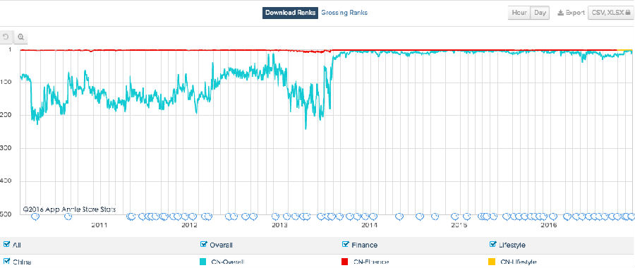

支付宝的一个小小改版，引发了微信更新般的热度。
11月24日，支付宝悄悄在首页newsfeed中增加了“圈子”功能。
圈子并没有面向全部的用户，而是选择了少量用户进行灰度测试。成为圈主后，可以制定圈子的主题和入圈的规则。
圈子之所以引发争议，主要是有两个因素带来的。
在“白领日记”、“校园日记”等圈子里，圈主规定只有女性用户有权发表图片，通过图片可以吸引点赞、评论和打赏，这造成两大后果，女性用户争相发大尺度照片，有人通过盗图来吸引打赏。
两个圈子打擦边球的做法，让彭蕾和马云都坐不住了。
蚂蚁金服董事长彭蕾召集22位管理团队成员反思，并发内部信，错了就是错了。
阿里巴巴董事局主席马云随后也在内网中发声：“阿里巴巴珍贵的是改正错误的勇气。支付宝，继续努力。阿里人，学习反思和自查。”
超先声认为，这个错误，阻挡不了蚂蚁在社交方面尝试的决心。
从2015年支付宝9.0开始，支付宝就增加了“朋友”这一Tab，后来又逐渐增加到好友圈、群以及newsfeed，甚至2016年春节的“集五福”活动，都不如这次悄悄的灰度测试让人关注。
1、初尝社交红利
跌跌撞撞中，支付宝已经掌握了打开社交之门的钥匙。
支付宝的登陆活跃度和用户使用时长，都有了大幅的提升。
11月28日的支付宝的百度指数是235551，几乎赶上了双11的241865。
双11是整个阿里巴巴用了将近10年时间打造出来的大IP，1207亿元的天量成交带来的热度。
正在灰度测试的圈子，没有通过PR和宣传，就达到了这个效果，其实就是产品能力的增强，不需要PR来带了。
在话题性上和吸引用户上，无论如何，从数据上来说，这次战役已经取得阶段性成果。
辛辛苦苦做社交两年，支付宝一直苦于无法找到突破口。
9.0版本加上的朋友，2015、2016年春节的红包大战，集五福，虽然配上了承接自阿里“世界第一公关”团队的能力，话题性强，但社交产品始终不见起色。
虽然通过集五福等手段，支付宝有了通讯录和关系网，有朋友而无社交，无法产生有效互动。
支付宝从9.9版本，终于摸到了社交的精髓，不再纠结于用户直接聊天，而是通过newsfeed让用户展示生活。
这个做法是很成功的，2016年9月份QuestMobile的数据显示，作为中国总排名第6的APP，支付宝的MAU突破3.74亿，同比增长66%。
相比之下，中国第一APP微信的MAU8.17亿，增长32.8%，仅仅是支付宝的一半。
兴趣推荐、朋友动态展示，类似于Facebook的newsfeed+微信朋友圈的功能，终于让支付宝找准了自己的路子。
9.9版本之后，支付宝的活跃度就大幅攀升，数据足以说明一切。
不过，支付宝在社交上的探索，比起自己之前很成功，比起微信来，差距不是一般的大。
一个是在社交上浸淫了18年的老炮，一个是初入社交圈的新手。
张小龙内部演讲要警惕KPI和流程，希望用户不要停留在微信上。
支付宝这边，还停留在KPI说话，尽量在数据上弄漂亮，增加用户使用时长的阶段。
这是没办法的事情。根据QuestMobile的数据，虽然都是头部APP，微信的月使用次数是569.5，而支付宝是可怜的21.3！
地主家有余粮，农夫犹饿死。
微博CEO王高飞说，蚂蚁金服估值500多亿美金，如果没有一个日活过亿的APP，是不是撑得住？
重压之下的支付宝发力狂奔，也有点“蒙眼开车”的味道，刚刚入门了社交，尝到甜头之后，难以克制，毕竟诱惑巨大。
“校园日记”、“白领日记”的擦枪走火，其实就是社交素人支付宝交的学费。
四年前，微信约炮、陌陌约炮的消息不绝于耳，如今洗白上岸，性话题带来的流量是任何一个初入社交的新手都无法抗拒的诱惑。
毕竟，仓廪实而知礼节，先填饱肚子再讲情怀，饥不择食的支付宝犯了点错。
还好马云和彭蕾的及时刹车，支付宝并没有在错误的道路上越走越远。
支付宝已经掌握了社交的方法，也摸索了一套对支付宝行之有效的社交产品，假以时日，支付宝的社交产品肯定会让人眼前一亮，而不是像目前这种透支品牌的形式。
2、蚂蚁产品矩阵
有用户怀疑，作为严肃的金融理财工具，支付宝正在慢慢变质。
余额宝、理财、基金保险、网商银行甚至账单等功能越藏越深，支付宝的社交已经伤害了其基本功能。
实际上，这是支付宝有意为之。
蚂蚁金服旗下，已经不仅仅是支付宝一个APP，支付宝如同一个母体，孵化出了四五个专业垂直类的APP。
负责吃喝玩乐的是口碑，负责理财保险的是蚂蚁聚宝，负责存款贷款虚拟银行卡的是网上银行。
在蚂蚁金服的规划中，这些专业功能只是在头部APP支付宝上有个入口，大部分的功能，都在独立APP中完成。
支付宝作为国民级的金融应用，保留的几个核心功能是支付、余额宝和花呗等。
专业的理财和银行等服务，必须由专业APP来完成，因为支付宝面向的是最广大用户，拥有4.5亿，支付宝只能担保基本的风险，却无法承担所有的风险。
这类似于银行的存款保险制度，银行可以为存款提供最多50万额度的存款保险。而基金股票信托等，则需要用户风险自担。
支付宝的逻辑也是如此，最基本的功能余额宝、借呗等，风险较低，可以留在支付宝；高风险的业务，高净值的人群，可以分流到蚂蚁聚宝和网商银行APP里。
支付宝敢在社交上放开手脚折腾，也是因为核心金融功能的剥离。
社交伤害作为支付和金融理财工具的说法，是不成立的。
蚂蚁聚宝才是支付宝高净值人群的归属地，其实名登陆用户超过2550万，基金产品超过1600只。
3、支付宝的移动崛起之路
在PC时代，支付宝占据了第三方支付的近九成份额。
移动互联网时代，支付宝APP崛起有个清晰的脉络。
在APPAnnie的数据里，一直排名二三十在2013年6月份忽然进入了中国APP排名前10，并稳定在五六名左右。
2013年6月，支付宝发布了余额宝，不光吸引了近一万亿的存款，还让支付宝一举进入中国头部APP。

不过中国排名第一第二的APP，一直以来都是微信和QQ，更可怖的是，两者月打开率都在四五百之多。
支付宝作为蚂蚁金服和阿里集团寄予厚望的产品，在来往失败之后，又背上了独立支撑社交的重任。
这是背水一战，只能成功，不能失败。
如果支付宝能够在用户和使用时长上有一个飞跃曲线，就非做社交不可。
这就是支付宝顶着巨大的舆论压力，也要上马社交的最重要原因。
要是舆论有用，要实干家何用？
套用马云最著名的一句话，梦想还是要有的，万一实现了呢？
不妨多给支付宝一点时间。
- 推荐图文
- 推荐人物
- 推荐企业